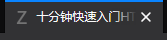

一点废话放在前头（不想看可直接跳到正文部分）
这个页面的由来
十分钟快速入门HTML是我学习oi竞赛
的第一个学期里与同机房某dalao开
玩笑时所提出的。当时我刚接触到Github Pages，
想要做一个自己的博客，却苦于不会
写HTML，于是请教那位dalao有没有
十分钟完全入门HTML的教程，后来那
位dalao在他luogu主页里挂我的友链
时写的是10分钟完全入门HTML5找ta
后来因学业繁忙暂时搁置了HTML的事，
现在在新型冠状病毒所带来的“假期”
里又重拾了HTML，于是写下这份教程，
权当锻炼自己的能力了。
感谢
感谢同机房所有dalao的支持
正文
目标
通过这个教程，我计划写下一个简单的HTML教程， 在学习完本文内容后，你应该可以写出一个与这个 网页的HTML相似的HTML文件（但没有css的单纯的 HTML是很丑的，所以你要自立更生css的写法后才 能写出真正意义上看起来相似的网页而不是HTML文 件。），以及粗略地看懂并简单修改别的网站的ht ml文件。
注意:这只是一个简短的教程，所以并不会对所有内容进行说明，且只会讲解最基础的HTML知识，如果想系统地学习Web开发，我个人推荐这个网站
学习前的准备
如果你想在真正意义上在十分钟内完成这个教程， 你需要有一些最基本的HTML知识（如标签的结构等 ）并放弃所有的实践练习。如果你没有相关的知识， 那也无关紧要，只不过你可能要多花一点时间而已。
如果你想把你做出来的网页发布在网络上让每个人都可以看见，最简单的方法就是使用Github Pages，网络上有很多相关的教程而且这是完全免费的！
（呸呸呸以上不是准备内容）
真正的准备内容：
- 一个好的浏览器（推荐Chrome或者Firefox开发者版）
- 一个好的代码编辑器（我用的是VSCode，其实用记事本也完全可以，但是代码量一大看起来就很费劲）
- 如果你不是用自己的电脑，想在不准备以上内容的情况下学习本文，可以试试在线调试工具
- 虽然新版360浏览器的调试功能在现阶段也足够使用，但是仍旧不推荐，因为360在这方面不够专业（本来的目标用户就不是开发者），且不够“干净”（当然如果你硬要用也没人拦着你）
Start!
一个模板
因为是一个快速教程，我不负责解释一开始的具体写法，下面给出一个html模板，后面的教程就在这么模板上展开。
<html>
<head>
<title>在这里输入你的网页标题!</title>
<meta charset="utf-8">
<link rel="shortcut icon" href="在这里输入缩略图的地址！" type="image/x-icon">
</head>
<body>
</body>
</html>
需要注意的是，上面的模板并不是完美的，其实他有着许多不足之处，但是它可以胜任大多数的情况。如果你以后再深入地学习HTML，你就可以对它进行改进以适应你的需求。
对于以上模板，你可以暂时理解为是HTML的固定格式，事实上，几乎所有的网页都包含有模板里的所有内容
创建一个HTML文件
首先，你需要找到一个合适文件夹来存放你的HTML文件。找到后你需要新建一个文本文档，并把它重命名为index,并把后缀名修改为html。如果你不会修改后缀名的话，请自行百度。
事实上你其实可以不必把他命名为index，但如果你打算把他发布在网络上(比如使用Github Pages)，你的网页的主页面就必须叫做index。（如果没看懂可以忽略）
接下来，用你安装好的代码编辑器（如果没有就用记事本）打开刚才创建的文件，把上面的模板复制进去，如果是在线调试工具就直接把上面的模板复制到网页的HTML一栏中。
改变标签页的样子
在这个模块里，你将可以让你的HTML在标签栏里有个更好看的样子,大概这样：
可以看到，这样一个标签由前面的一个缩略图和后面紧跟的标题组成，要做出这样一个标签，你只需要在模板中把在这里输入你的网页标题!改为你想要的标题，把缩略图的链接地址换到在这里输入缩略图的地址！的位置就行。这里的链接地址可以是本地路径（可以是相对路径），也可以是网络路径，如果不会表示，可以自行上网搜索。如果不想做缩略图，什么都不改就行了，浏览器会忽略掉代码里的错误的。
这里的缩略图应为一个16*16像素大小的ico文件
给正文添加一些内容
这一步里，我们要给网页的正文添加一些内容，让它拥有些网页真正应该有的东西。（ps.这应该是最后一个章节了）